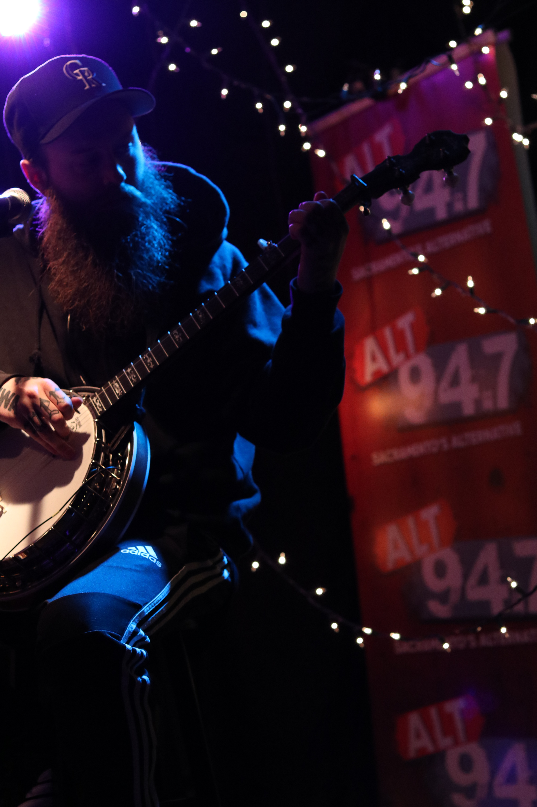
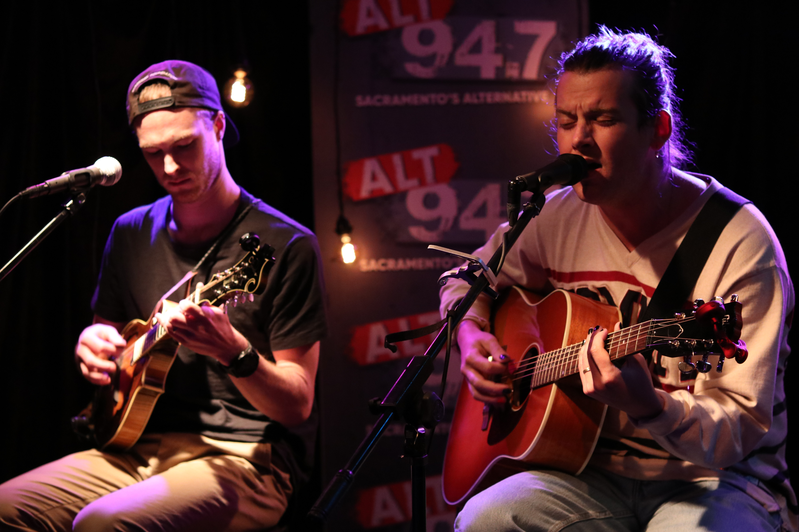
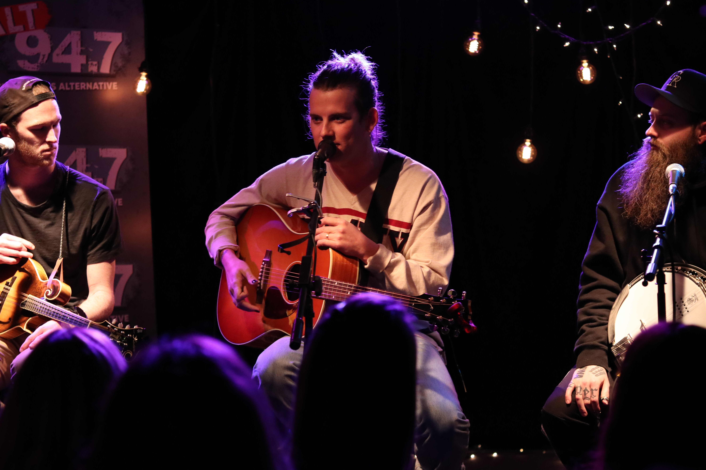
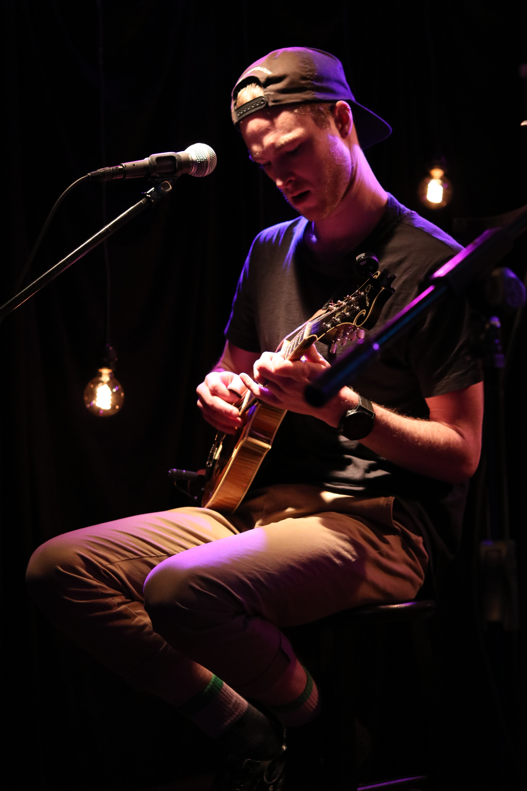
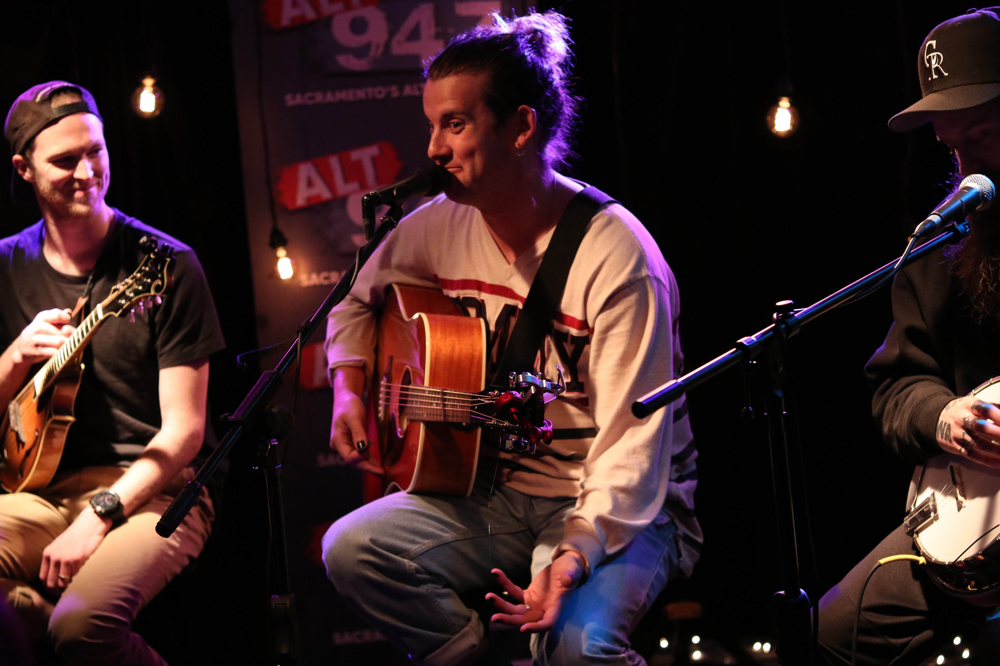

Judah and the Lion Soundstage






Judah & the Lion performed for ALT94.7 at Entercom Sacramento. They performed three songs during their soundstage: “Over my Head,” “Why Did You Run,” and “pep talk.” During their performance, I was assigned to capture shots of each member of the band and group shots with the listeners.